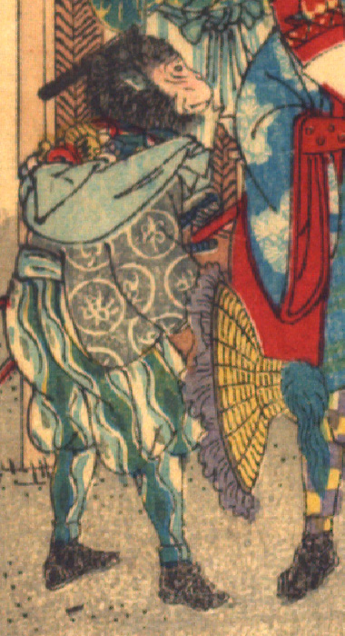

猿。紺色の着物と青と白の縞模様の袴を身につけ、地下足袋をはいている。腰に2本刀を差し、宝物を包んだ青色の包みを肩に巻き、片手に房飾りの付いた編み笠を持っている。
著作者：David Thompson／出典：親書誌：U426_nichibunken_0116：Momotaro／日付：2006／資源識別子：U426_nichibunken_0116_0005_0002
Copyright (c)2010- International Research Center for Japanese Studies, Kyoto, Japan. All rights reserved.